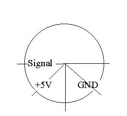

Vernier sonder
vernier.ini:
- Accelerometer,
5g"m/s²"23.94"-59.82
Barometer 0..1.2 Bar"P/Bar"0.6997"0.1357
CO2 Gas Sensor"ppm"2000.0"0.00
Kraftsensor(±10N)"F/N"-4.94"12.28
Kraftsensor(±50N)"F/N"-24.75"62.22
Luxmeter(0..600)"Lux"200"0.0
Luxmeter(0..6000)"Lux"2222"0.0
Luxmeter(0..150000)"Lux"50000"0.0
Heart Rate Monitor"U/V"1.00/0.00
Teslameter (Low amp.)"B/T"0.0032"-0.0080
Teslameter (High
amp.)"B/T"0.00016"-0.00029
Tryksensor (0..6.8 atm)"P/atm"2.20"0.0
Formatet består af 4 tekster/tal adskilt af et
gåseøje:
sondens navn, enhed på y-aksen, faktor og
offset. Man kan selv tilføje nye sonder til »vernier.ini«
Vernier-sonsorernes benforbindelse er set forfra (ledningen
går bagud til sensoren):

- Benplacering efter uret:
- kl. 9.00 : signal
- kl. 7.30 : +5V (forsyning)
- kl. 4.30 : GND (fælles nul for spændingsforsyning og
signal
se www.vernier.com